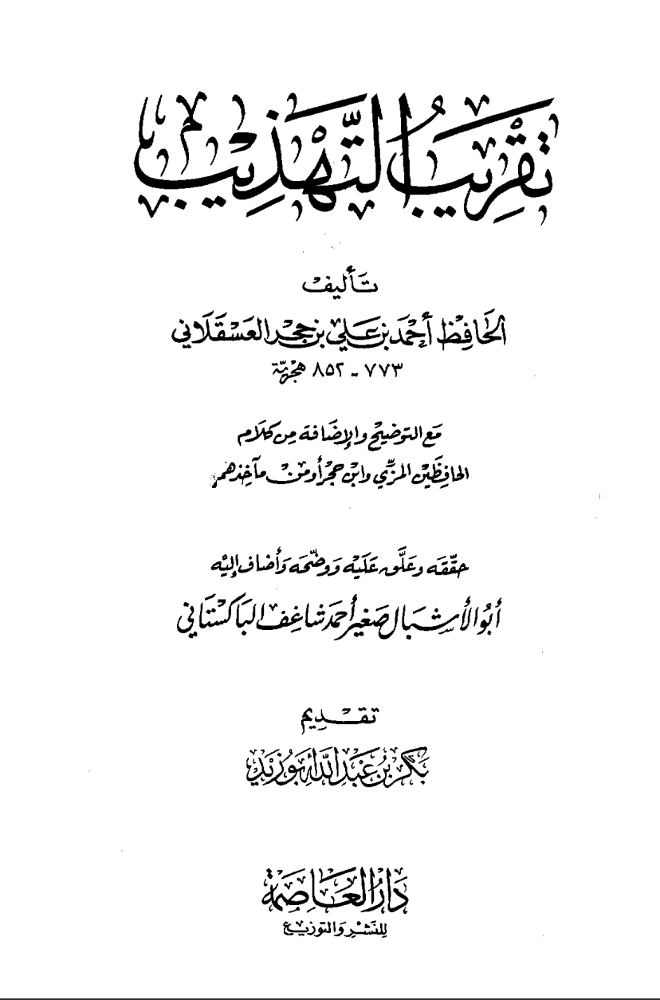
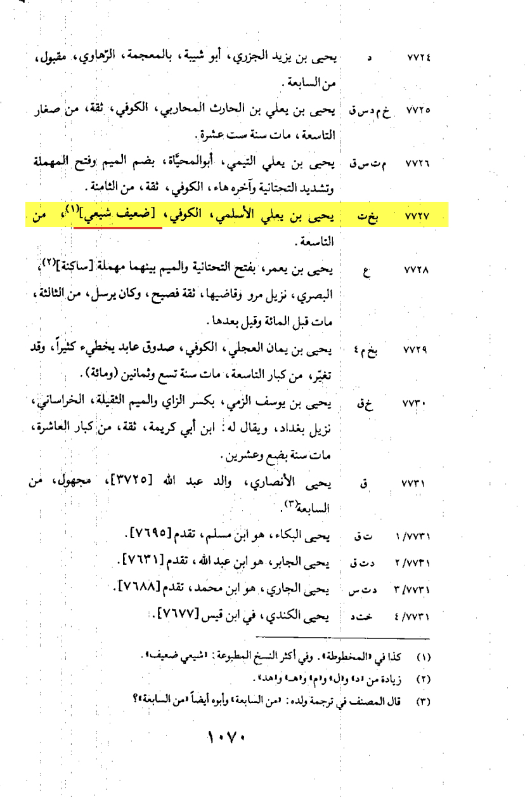

The sanad of the first narration found in al-tabrani of the prophet not sleeping before he puts water between the breasts of fatima :
حَدَّثَنَا مُحَمَّدُ بْنُ عَبْدِ اللَّهِ الْحَضْرَمِيُّ، ثنا الْحَسَنُ بْنُ حَمَّادٍ الْحَضْرَمِيُّ، ثنا يَحْيَى بْنُ يَعْلَى الأَسْلَمِيُّ، عَنْ سَعِيدِ بْنِ أَبِي عَرُوبَةَ، عَنْ قَتَادَةَ، عَنِ الْحَسَنِ، عَنْ أَنَسِ بْنِ مَالِكٍ، قَالَ:
Look who is in the narration yehia bin ya’la Al-aslamy
yehia bin ya’la and there is a consensus that he is weak Shi’a narrator
[Tāhzīb āl kāmāl fī āsmāā āl rījāl v:32 p:50 h:6951]


Ibn Hajar says: '…weak shi’i…’
Taqrib by Ibn Hajar page 1070